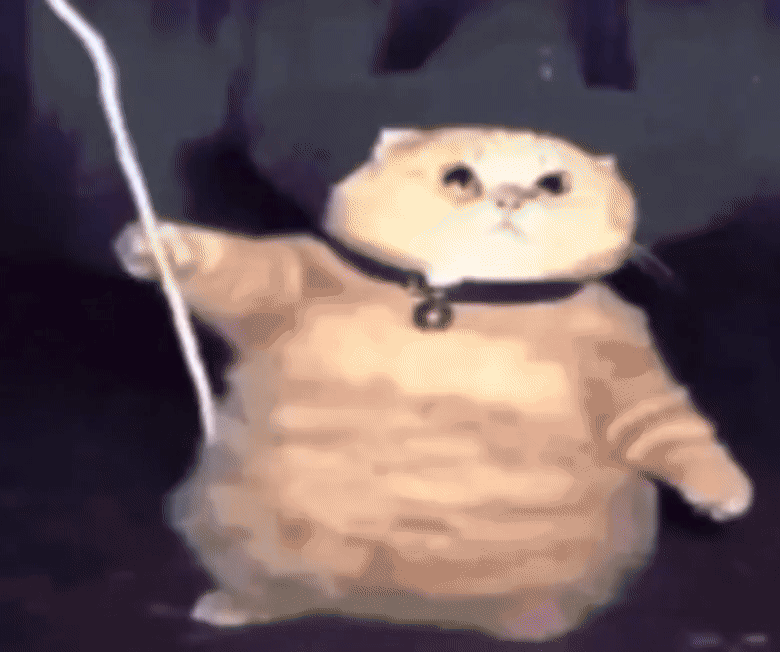

Magordito era un gato común hasta que encontró un libro de hechizos cerca de su hogar...
mientras lo leía le cayó un rayo potente y entonces de fusionó con el libro y todos los
hechizos que estaban dentro,, desde entonces se convirtió en un gato mago con habilidades especiales desconocidas!

Momento exacto del nacimiento de Magordito¿Qué poderes tiene Magordito?
Invocar fuego
Crear flores de la nada
Magia pura de sus patas
Poder convertirse en Sonic
Lanzar rayos de sus patitas
Levitar
Inicio de la Misión
Magordito te ha pedido ayuda, te cuenta su historia que, mientras paseaba por el Bosque Espectral, el Gran Sabio Felino le encomendó una misión:
"El Cristal de los Elementos ha sido robado por el temible Cuervo Sombrío. Sin él, la magia del bosque desaparecerá. Debes recuperarlo antes de la medianoche o todo quedará en sombras para siempre."
Antes que nada, Magordito te pide que llenes un formulario de consentimiento en donde no se responsabiliza de cualquier daño o acción sucedida durante la aventura.